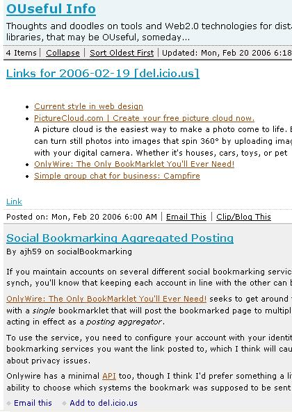

February 20, 2006
FeedFlaring OUseful Info
Reminder: are you subscribed to the richest OUseful Blog feed  ?
?
A little while ago, I started using Feedburner to syndicate my OUseful Info feed.
If you're still subscribed to the feed via blogs.open.ac.uk etc. here's a couple more reasons why you should move over to the OUseful feed at Feedburner:
1) The feed address is guaranteed not to change, even if I move the OUseful blog, which is quite likely to happen.

2) The new feed has a couple of additions at the bottom of each post - an Email this link, so you can email the post on, and an Add to del.icio.us for easier bookmarking. These additions come via Feedflare; with the introduction of the Feedflare API a couple of weeks ago, I'm hoping for some interesting additional inserts being made available over the next few weeks.
3) I bookmark reasonably heavily on delicious, and while a lot of the bookmarks posted there are not really relevant to the themes of this blog, some are. So if you're reading this via Feedburner, you'll now get a daily insert of that subset of my delicious bookmarks tagged as feedthru. I'll also strat making an effort to annotate/comment the links, which I haven;t tended to do in the past.
So - if you're a subscriber - check to see your subscribed via http://feeds.feedburner.com/ouseful
Posted by ajh59 at February 20, 2006 10:50 AM